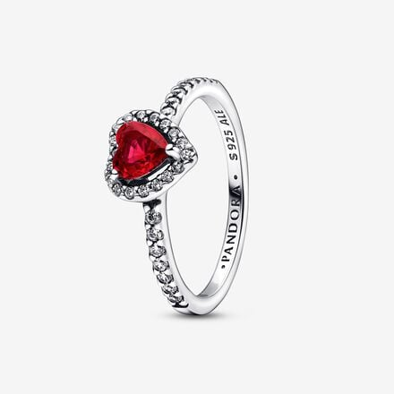
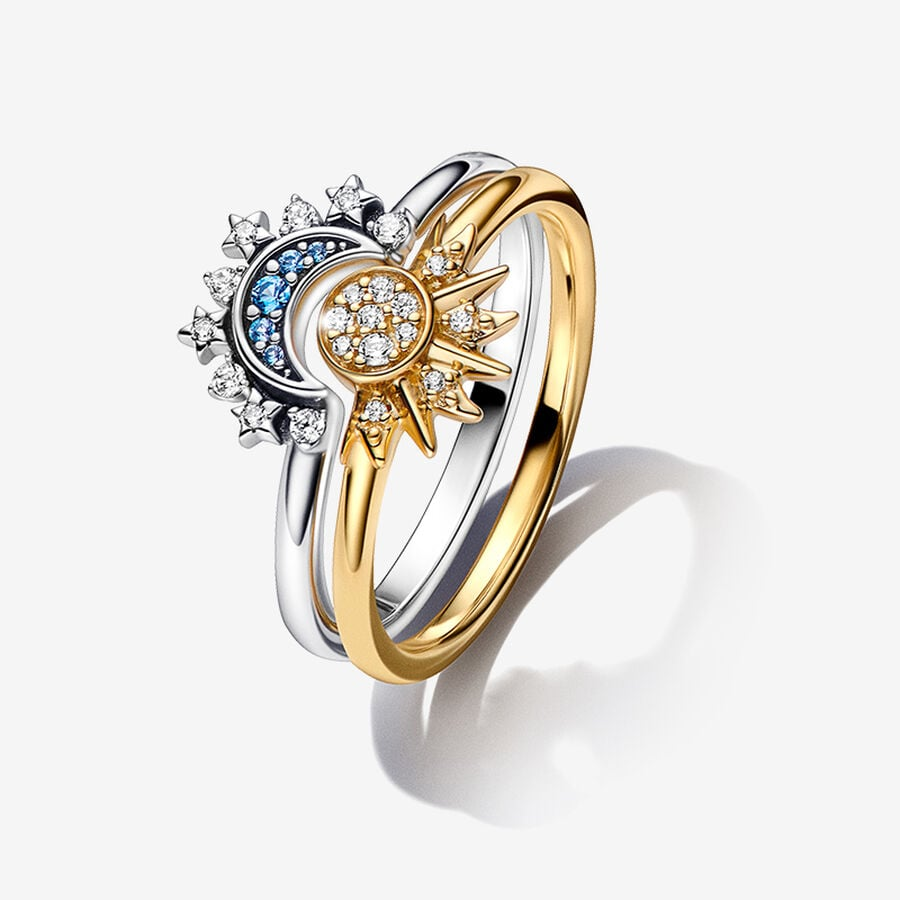
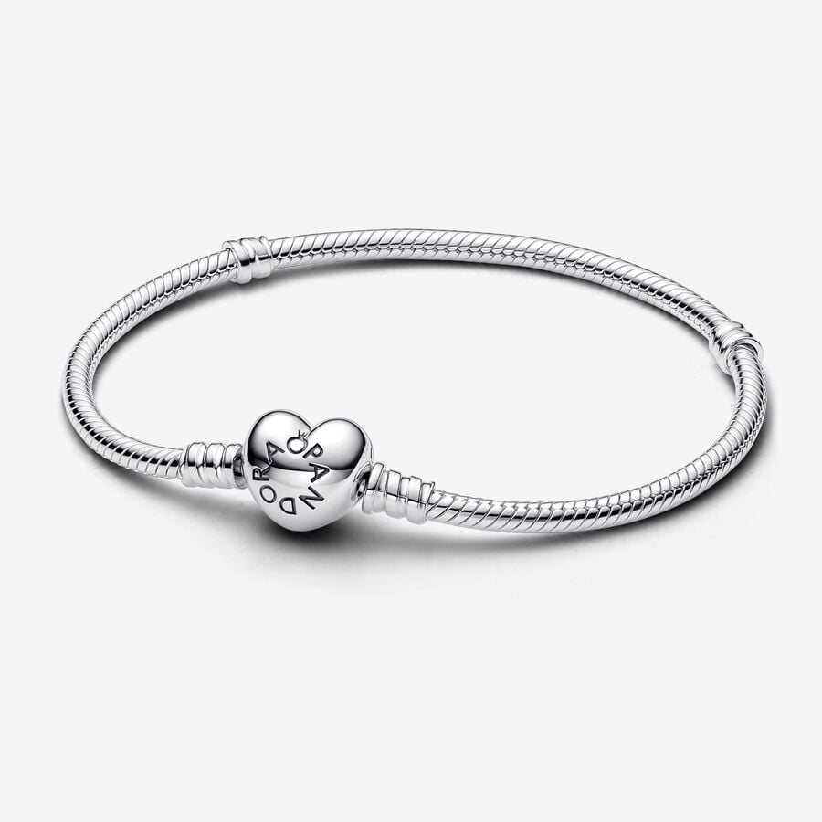
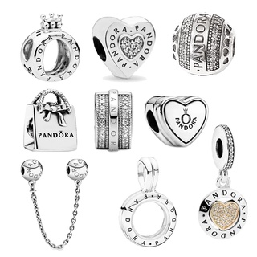

Nuestra empresa se especializa en ofrecer servicios de venta de una de las marcas mas conocida a nivel de joyas, somos mayoristas y minoristas de dichos accesorios, por lo que en nuestra pagina podras encontrar todo lo relacionado a la misma, desde anillos hasta set de cadenas.
Anillos


Exiten diversos disenos y modelos de anillos, actualmente muchos de nuestros productos funcioan para realizar promesas de compromiso, como tambien pedir matrimonio y posteriormente boda, pero no solo es este el significado de nuestros productos ya que tambien puedes darte amor y consertirte, por que tu eres tu mayor inversion.


Las pulseras pandora al igual que los charms, simbolizan una vida, cada charms que se encuentra en una de tus pulsera, representa algun momento especial que has vivido asi que mas que un accesorios, somos una memoria que te acompanara a cada lugar y experiencia, todos los dias